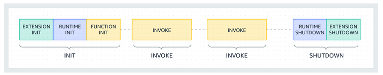

AWS - Lambda - multichoice questions
Question 1
A video processing lambda function is being triggered upon new video uploading to S3. The function performs resizing and upload the processed video to another S3 bucket.
What could be a potential limit?
- This architecture is not scalable - only one lambda function can be executed concurrently.
- Lambda functions cannot have permission on S3 buckets.
- Long video files can reach function execution timeout (900 seconds).
- There will not be enough CPU to process the video.
Question 2
The Lambda function service is:
- IaaS
- PaaS
- SaaS
- GaaS
Question 3
How can you configure the OS your Lambda runs on?
- In Lambda page, under "Manage lambda infrastructure".
- You can create a bash script and execute it one for all further lambda invocations.
- Base your lambda on your own AMI.
- None of the above since AWS manage infrastructure on your behalf.
Question 4
Consider the following lambda function
import boto3
dynamodb_client = boto3.client('dynamodb')
COUNTER = 0
def lambda_handler(event, context):
global COUNTER
COUNTER += 1
dynamodb_client.put_item(
TableName='fruitSalad',
Item={
'counter':{'S': str(COUNTER)}
}
)
Given two successful different invocation on the same execution environment, as described bellow:

What would be the value of counter in DynamoDB fruitSalad table? (assume there were no additional invocations except the above two)
- 1
- 2
- Either 1 or 2 as this is a race condition
- None of the above
Question 5
Given the below Python lambda:
def lambda_handler(event, context):
file_path = 'myfile.txt'
with open(file_path, 'w') as file:
file.write('This is a write operation.')
What could be a potential problem?
- The file
myfile.txtis created in a read-only path. - Other lambdas could access the created files.
- There is no error handling in the code.
- The function should be executed successfully.
Question 6
Given the below lambda function
import boto3
import pymysql
def lambda_handler(event, context):
database_username = "admin"
database_password = "secretpassword"
connection = pymysql.connect(
host='...',
user=database_username,
password='database_password',
database='mydb'
)
The code above contains sensitive data, directly hardcoded in the code.
How could that vulnerability be mitigated?
- Store the credentials in AWS Secrets Manager and read it during runtime.
- Define the credentials as environment variable and access them during runtime.
- Encrypt the sensitive data.
- Use lambda layers to hide the sensitive code.
Question 7
You are developing a serverless application that requires the use of a custom Python library across multiple AWS Lambda functions. The library contains common utility functions and dependencies that need to be shared among the functions.
What is the recommended AWS service or feature to streamline the deployment and maintenance of the library across the Lambda functions?
- AWS Lambda environment variables
- AWS Lambda layers
- AWS CloudFormation templates
- AWS Step Functions
Question 8
You are optimizing the performance of your AWS Lambda functions. You goal is to increase the CPU resources allocated to your lambda.
What would you do?
- You cannot control the CPU as infrastructure is managed by AWS.
- In your lambda page, increase the CPU resources.
- In your lambda page, increase the RAM resources.
- Choose higher version runtime.
Question 9
You need to estimate the required provisioning capacity for an AWS Lambda function that is expected to handle a sustained load of 500 requests per second. Each request takes approximately 15 milliseconds to process.
Based on these requirements, which of the following calculations best match the minimum number of concurrent executions needed to handle the expected load?
- 5 concurrent executions
- 10 concurrent executions
- 50 concurrent executions
- 100 concurrent executions
Question 10
You have developed an asynchronous AWS Lambda function that processes messages from an event source. What happens in the case of a failure during the execution of the function?
- The lambda execution will retry at least 3 times.
- The lambda will respond with an exception after the first failure.
- The event will be sent to a dead letter queue.
- None of the above.
Question 11
You have developed an synchronous AWS Lambda function that processes messages from an event source. What happens in the case of a failure during the execution of the function?
- The lambda execution will retry at least 3 times.
- The lambda will respond with an exception.
- The event will be sent to a dead letter queue.
- None of the above.
Question 12
You are developing an AWS Lambda function that needs to access other AWS resources within your account, such as an Amazon DynamoDB table and an Amazon S3 bucket.
How can you enable the Lambda function to securely access these resources?
- Attach an IAM role to the Lambda function with the necessary permissions to access the DynamoDB table and S3 bucket.
- Embed the AWS access key and secret access key directly in the Lambda function code to authenticate and access the DynamoDB table and S3 bucket.
- Open the security group of the Lambda function to allow inbound access from the DynamoDB table and S3 bucket.
- Enable AWS Trusted Advisor to automatically grant access to the Lambda function for the DynamoDB table and S3 bucket.
Question 13
You are developing an AWS Lambda function that should communicate with one of your EC2 instances located in a private VPC.
How can you support this requirements?
- This requirements cannot be fulfilled since the network infrastructure of the lambda is managed by AWS.
- You can associate your lambda with some of your VPC.
- You can allow access from the lambda using VPN.
- You can allow access using VPC PrivateLink